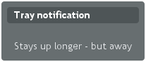

This chapter provides the fundamentals of server-side web application development with Vaadin, concentrating on the basic elements of an application from a practical point-of-view.
1. Overview
A server-side Vaadin application runs as a Java Servlet in a servlet container. The Java Servlet API is, however, hidden behind the framework. The user interface of the application is implemented as a _ class, which needs to create and manage the user interface components that make up the user interface. User input is handled with event listeners, although it is also possible to bind the user interface components directly to data. The visual style of the application is defined in themes as CSS or Sass. Icons, other images, and downloadable files are handled as _resources, which can be external or served by the application server or the application itself.
figure.application.architecture illustrates the basic architecture of an application made with the Vaadin Framework, with all the major elements, which are introduced below and discussed in detail in this chapter.
First of all, a Vaadin application must have one or more classes that extend the abstract com.vaadin.ui. class and implement the init() method. A custom theme can be defined as an annotation for the .
@Theme("hellotheme")
public class HelloWorld extends UI {
protected void init(VaadinRequest request) {
... initialization code goes here ...
}
}A is a viewport to a Vaadin application running in a web page. A web page can actually have multiple such s within it. Such situation is typical especially with portlets in a portal. An application can run in multiple browser windows, each having a distinct UI instance. The UIs of an application can be the same UI class or different.
Vaadin framework handles servlet requests internally and associates the requests with user sessions and a UI state. Because of this, you can develop Vaadin applications much like you would develop desktop applications.
The most important task in the initialization is the creation of the initial user interface. This, and the deployment of a UI as a Java Servlet in the Servlet container, as described in application.environment, are the minimal requirements for an application.
Below is a short overview of the other basic elements of an application besides :
-
A __ represents an HTML fragment in which a Vaadin application runs in a web page. It typically fills the entire page, but can also be just a part of a page. You normally develop a Vaadin application by extending the + class and adding content to it. A is essentially a viewport connected to a user session of an application, and you can have many such views, especially in a multi-window application. Normally, when the user opens a new page with the URL of the Vaadin UI, a new [class]+UI (and the associated Page object) is automatically created for it. All of them share the same user session.
- Page
-
A + is associated with a [class]+Page object that represents the web page as well as the browser window in which the runs.
- Vaadin Session
-
A VaadinSession object represents a user session with one or more UIs open in the application. A session starts when a user first opens a UI of a Vaadin application, and closes when the session expires in the server or when it is closed explicitly.
- User Interface Components
-
The user interface consists of components that are created by the application. They are laid out hierarchically using special layout components, with a content root layout at the top of the hierarchy. User interaction with the components causes events related to the component, which the application can handle. Field components are intended for inputting values and can be directly bound to data using the Vaadin Data Model. You can make your own user interface components through either inheritance or composition. For a thorough reference of user interface components, see components, for layout components, see layout, and for compositing components, see components.customcomponent.
- Events and Listeners
-
Vaadin follows an event-driven programming paradigm, in which events, and listeners that handle the events, are the basis of handling user interaction in an application (although also server push is possible as described in advanced.push). architecture.events gave an introduction to events and listeners from an architectural point-of-view, while application.events later in this chapter takes a more practical view.
- Resources
-
A user interface can display images or have links to web pages or downloadable documents. These are handled as resources, which can be external or provided by the web server or the application itself. application.resources gives a practical overview of the different types of resources.
- Themes
-
The presentation and logic of the user interface are separated. While the UI logic is handled as Java code, the presentation is defined in themes as CSS or SCSS. Vaadin includes some built-in themes. User-defined themes can, in addition to style sheets, include HTML templates that define custom layouts and other theme resources, such as images. Themes are discussed in detail in themes, custom layouts in layout.customlayout, and theme resources in application.resources.theme.
- Data Binding
-
Field components are essentially views to data, represented in the Vaadin Data Model. Using the data model, the components can get their values from and update user input to the data model directly, without the need for any control code. A field component is always bound to a property and a group of fields to an item that holds the properties. Items can be collected in a container, which can act as a data source for some components such as tables or lists. While all the components have a default data model, they can be bound to a user-defined data source. For example, you can bind a Table component to an SQL query response. For a complete overview of data binding in Vaadin, please refer to datamodel.
2. Building the UI
Vaadin user interfaces are built hierarchically from components, so that the leaf components are contained within layout components and other component containers. Building the hierarchy starts from the top (or bottom - whichever way you like to think about it), from the UI class of the application. You normally set a layout component as the content of the UI and fill it with other components.
public class MyHierarchicalUI extends UI {
@Override
protected void init(VaadinRequest request) {
// The root of the component hierarchy
VerticalLayout content = new VerticalLayout();
content.setSizeFull(); // Use entire window
setContent(content); // Attach to the UI
// Add some component
content.addComponent(new Label("Hello!"));
// Layout inside layout
HorizontalLayout hor = new HorizontalLayout();
hor.setSizeFull(); // Use all available space
// Couple of horizontally laid out components
Tree tree = new Tree("My Tree",
TreeExample.createTreeContent());
hor.addComponent(tree);
Table table = new Table("My Table",
TableExample.generateContent());
table.setSizeFull();
hor.addComponent(table);
hor.setExpandRatio(table, 1); // Expand to fill
content.addComponent(hor);
content.setExpandRatio(hor, 1); // Expand to fill
}
}The component hierarchy could be illustrated with a tree as follows:
UI
`-- VerticalLayout
|-- Label
`-- HorizontalLayout
|-- Tree
`-- TableThe result is shown in figure.application.architecture.example.
Instead of building the layout in Java, you can also use a declarative design, as described later in application.declarative. The examples given for the declarative layouts give exactly the same UI layout as built from the components above.
The built-in components are described in components and the layout components in layout.
The example application described above just is, it does not do anything. User interaction is handled with event listeners, as described a bit later in application.events.
2.1. Application Architecture
Once your application grows beyond a dozen or so lines, which is usually quite soon, you need to start considering the application architecture more closely. You are free to use any object-oriented techniques available in Java to organize your code in methods, classes, packages, and libraries. An architecture defines how these modules communicate together and what sort of dependencies they have between them. It also defines the scope of the application. The scope of this book, however, only gives a possibility to mention some of the most common architectural patterns in Vaadin applications.
The subsequent sections describe some basic application patterns. For more information about common architectures, see advanced.architecture, which discusses layered architectures, the Model-View-Presenter (MVP) pattern, and so forth. The advanced.global discusses the problem of passing essentially global references around, a common problem which is also visited in application.architecture.accessing.
2.2. Compositing Components
User interfaces typically contain many user interface components in a layout hierarchy. Vaadin provides many layout components for laying contained components vertically, horizontally, in a grid, and in many other ways. You can extend layout components to create composite components.
class MyView extends VerticalLayout {
TextField entry = new TextField("Enter this");
Label display = new Label("See this");
Button click = new Button("Click This");
public MyView() {
addComponent(entry);
addComponent(display);
addComponent(click);
// Configure it a bit
setSizeFull();
addStyleName("myview");
}
}
// Use it
Layout myview = new MyView();This composition pattern is especially supported for creating forms, as described in datamodel.itembinding.formclass.
While extending layouts is an easy way to make component composition, it is a good practice to encapsulate implementation details, such as the exact layout component used. Otherwise, the users of such a composite could begin to rely on such implementation details, which would make changes harder. For this purpose, Vaadin has a special CustomComponent wrapper, which hides the content representation.
class MyView extends CustomComponent {
TextField entry = new TextField("Enter this");
Label display = new Label("See this");
Button click = new Button("Click This");
public MyView() {
Layout layout = new VerticalLayout();
layout.addComponent(entry);
layout.addComponent(display);
layout.addComponent(click);
setCompositionRoot(layout);
setSizeFull();
}
}
// Use it
MyView myview = new MyView();For a more detailed description of the CustomComponent, see components.customcomponent. The Vaadin Plugin for Eclipse also includes a visual editor for composite components, as described in eclipse.
2.3. View Navigation
While the most simple applications have just a single view (or screen), perhaps most have many. Even in a single view, you often want to have sub-views, for example to display different content. figure.application.architecture.navigation illustrates a typical navigation between different top-level views of an application, and a main view with sub-views.
The Navigator described in advanced.navigator is a view manager that provides a flexible way to navigate between views and sub-views, while managing the URI fragment in the page URL to allow bookmarking, linking, and going back in browser history.
Often Vaadin application views are part of something bigger. In such cases, you may need to integrate the Vaadin applications with the other website. You can use the embedding techniques described in advanced.embedding.
2.4. Accessing , Page, Session, and Service
You can get the UI and the page to which a component is attached to with getUI() and getPage().
However, the values are null until the component is attached to the UI, and typically, when you need it in constructors, it is not. It is therefore preferable to access the current , page, session, and service objects from anywhere in the application using the static getCurrent() methods in the respective +, [class]+Page, VaadinSession, and VaadinService classes.
// Set the default locale of the UI
UI.getCurrent().setLocale(new Locale("en"));
// Set the page title (window or tab caption)
Page.getCurrent().setTitle("My Page");
// Set a session attribute
VaadinSession.getCurrent().setAttribute("myattrib", "hello");
// Access the HTTP service parameters
File baseDir = VaadinService.getCurrent().getBaseDirectory();You can get the page and the session also from a UI with getPage() and getSession() and the service from VaadinSession with getService().
The static methods use the built-in ThreadLocal support in the classes.The pattern is described in advanced.global.threadlocal.
3. Designing UIs Declaratively
Declarative definition of composites and even entire UIs makes it easy for developers and especially graphical designers to work on visual designs without any coding. Designs can be modified even while the application is running, as can be the associated themes. A design is a representation of a component hierarcy, which can be accessed from Java code to implement dynamic UI logic, as well as data binding.
For example, considering the following layout in Java:
VerticalLayout vertical = new VerticalLayout ();
vertical.addComponent(new TextField("Name"));
vertical.addComponent(new TextField("Street address"));
vertical.addComponent(new TextField("Postal code"));
layout.addComponent(vertical);You could define it declaractively with the following equivalent design:
<v-vertical-layout>
<v-text-field caption="Name"/>
<v-text-field caption="Street address"/>
<v-text-field caption="Postal code"/>
</v-vertical-layout>Declarative designs can be crafted by hand, but are most conveniently created with the Vaadin Designer.
In the following, we first go through the syntax of the declarative design files, and then see how to use them in applications by binding them to data and handling user interaction events.
3.1. Declarative Syntax
A design is an HTML document with custom elements for representing components and their configuration. A design has a single root component inside the HTML body element. Enclosing html, head, body are optional, but necessary if you need to make namespace definitions for custom components. Other regular HTML elements may not be used in the file, except inside components that specifically accept HTML content.
In a design, each nested element corresponds to a Vaadin component in a component tree. Components can have explicitly given IDs to enable binding them to variables in the Java code, as well as optional attributes.
<!DOCTYPE html>
<html>
<body>
<v-vertical-layout size-full>
<!-- Label with HTML content -->
<v-label><b>Hello!</b> - How are you?</v-label>
<v-horizontal-layout size-full :expand>
<v-tree _id="mytree" caption="My Tree"
width-auto height-full/>
<v-table _id="mytable" caption="My Table"
size-full :expand/>
</v-horizontal-layout>
</v-vertical-layout>
</body>
</html>The DOCTYPE is not required, neither is the html, or body elements. Nevertheless, there may only be one design root element.
The above design defines the same UI layout as done earlier with Java code, and illustrated in figure.application.architecture.example.
3.2. Component Elements
HTML elements of the declarative syntax are directly mapped to Vaadin components according to their Java class names. The tag of a component element has a namespace prefix separated by a dash. Vaadin core components, which are defined in the package, have v- prefix. The rest of an element tag is determined from the Java class name of the component, by making it lower-case, while adding a dash (-) before every previously upper-case letter as a word separator. For example, ComboBox component has declarative element tag v-combo-box.
3.2.1. Component Prefix to Package Mapping
You can use any components in a design: components extending Vaadin components, composite components, and add-on components. To do so, you need to define a mapping from an element prefix to the Java package of the component. The prefix is used as a sort of a namespace.
The mappings are defined in meta name="package-mapping" ... elements in the HTML head. A attribute defines a mapping, in notation with a prefix separated from the corresponding Java package name with a colon, such as "my:com.example.myapp".
For example, consider that you have the following composite class com.example.myapp.ExampleComponent:
package com.example.myapp;
public class ExampleComponent extends CustomComponent {
public ExampleComponent() {
setCompositionRoot(new Label("I am an example."));
}
}You would make the package prefix mapping and then use the component as follows:
!DOCTYPE html
html
head
meta name="package-mapping"
content="my:com.example.myapp" /
/head
body
v-vertical-layout
v-labelbHello!/b - How are you?/v-label
!-- Use it here --
my-example-component/
/v-vertical-layout
/body
/html3.2.2. Inline Content and Data
The element content can be used for certain default attributes, such as a button caption. For example:
<v-button><b>OK</b></v-button>Some components, such as selection components, allow defining inline data within the element. For example:
<v-native-select>
<option>Mercury</option>
<option>Venus</option>
<option selected>Earth</option>
</v-native-select>The declarative syntax of each component type is described in the JavaDoc API documentation of Vaadin.
3.3. Component Attributes
3.3.1. Attribute-to-Property Mapping
Component properties are directly mapped to the attributes of the HTML elements according to the names of the properties. Attributes are written in lower-case letters and dash is used for word separation instead of upper-case letters in the Java methods, so that input-prompt attribute is equivalent to setInputPrompt().
For example, the caption property, which you can set with setCaption(), is represented as caption attribute. You can find the component properties by the setter methods in the <<,JavaDoc API documentation>> of the component classes.
<v-text-field caption="Name" input-prompt="Enter Name"/>3.3.2. Attribute Values
Attribute parameters must be enclosed in quotes and the value given as a string must be convertible to the type of the property (string, integer, boolean, or enumeration). Object types are not supported.
Some attribute names are given by a shorthand. For example, property of the Image component, which you would set with setAlternateText(), is given as the alt attribute.
Boolean values must be either "true" or "false". The value can be omitted, in which case true is assumed. For example, the enabled attribute is boolean and has default value "true", so enabled="true" and enabled and equivalent.
<v-button caption="OK" enabled="false"/>3.3.3. Parent Component Settings
Certain settings, such as a component’s alignment in a layout, are not done in the component itself, but in the layout. Attributes prefixed with colon (:) are passed to the containing component, with the component as a target parameter. For example, :expand="1" given for a component is equivalent to calling setExpandRatio(c, 1) for the containing layout.
v-vertical-layout size-full
!-- Align right in the containing layout --
v-label width-auto :rightHello!/v-label
!-- Expands to take up all remaining vertical space --
v-horizontal-layout size-full :expand
!-- Automatic width - shrinks horizontally --
v-tree width-auto height-full/
!-- Expands horizontally to take remaining space --
v-table size-full :expand/
/v-horizontal-layout
/v-vertical-layoutAgain, compare the above declaration to the Java code given in application.architecture.
3.4. Component Identifiers
Components can be identified by either an identifier or a caption. There are two types of identifiers: page-global and local. This allows accessing them from Java code and binding them to components, as described later in application.declarative.composite.
The id attribute can be used to define a page-global identifier, which must be unique within the page. Another design or UI shown simultaneously in the same page may not have components sharing the same ID. Using global identifiers is therefore not recommended, except in special cases where uniqueness is ensured.
The _id attribute defines a local identifier used only within the design. This is the recommended way to identifying components.
<v-tree _id="mytree" caption="My Tree"/>3.5. Using Designs in Code
The main use of declarative designs is in building application views, sub-views, dialogs, and forms through composition. The two main tasks are filling the designs with application data and handling user interaction events.
3.5.1. Binding to a Design Root
You can bind any component container as the root component of a design with the @DesignRoot annotation. The class must match or extend the class of the root element in the design.
The member variables are automatically initialized from the design according to the component identifiers (see application.declarative.identifiers), which must match the variable names.
For example, the following class could be used to bind the design given earlier.
@DesignRoot
public class MyViewDesign extends VerticalLayout {
Tree mytree;
Table mytable;
public MyViewDesign() {
Design.read("MyDeclarativeUI.html", this);
// Show some (example) data
mytree.setContainerDataSource(
TreeExample.createTreeContent());
mytable.setContainerDataSource(
TableExample.generateContent());
// Some interaction
mytree.addItemClickListener(event -> // Java 8
Notification.show("Selected " +
event.getItemId()));
}
}The design root class must match or extend the root element class of the design. For example, earlier we had v-vertical-layout element in the HTML file, which can be bound to a class extending VerticalLayout.
3.5.2. Using a Design
The fact that a component is defined declaratively is not visible in its API, so you can create and use such it just like any other component.
For example, to use the previously defined design root component as the content of the entire UI:
public class DeclarativeViewUI extends UI {
@Override
protected void init(VaadinRequest request) {
setContent(new MyViewDesign());
}
}3.5.3. Designs in View Navigation
To use a design in view navigation, as described in advanced.navigator, you just need to implement the View interface.
@DesignRoot
public class MainView extends VerticalLayout
implements View {
public MainView() {
Design.read(this);
...
}
...
}
...
// Use the view by precreating it
navigator.addView(MAINVIEW, new MainView());See advanced.navigator.urifragment for a complete example.
4. Handling Events with Listeners
Let us put into practice what we learned of event handling in architecture.events. You can implement listener interfaces in a regular class, but it brings the problem with differentiating between different event sources. Using anonymous class for listeners is recommended in most cases.
4.1. Using Anonymous Classes
By far the easiest and the most common way to handle events in Java 6 and 7 is to use anonymous local classes. It encapsulates the handling of events to where the component is defined and does not require cumbering the managing class with interface implementations. The following example defines an anonymous class that inherits the Button.ClickListener interface.
// Have a component that fires click events
final Button button = new Button("Click Me!");
// Handle the events with an anonymous class
button.addClickListener(new Button.ClickListener() {
public void buttonClick(ClickEvent event) {
button.setCaption("You made me click!");
}
});Local objects referenced from within an anonymous class, such as the Button object in the above example, must be declared final.
Most components allow passing a listener to the constructor, thereby losing a line or two. However, notice that if accessing the component that is constructed from an anonymous class, you must use a reference that is declared before the constructor is executed, for example as a member variable in the outer class. If it is declared in the same expression where the constructor is called, it doesn’t yet exist. In such cases, you need to get a reference to the component from the event object.
final Button button = new Button("Click It!",
new Button.ClickListener() {
@Override
public void buttonClick(ClickEvent event) {
event.getButton().setCaption("Done!");
}
});4.2. Handling Events in Java 8
Java 8 introduced lambda expressions, which offer a replacement for listeners. You can directly use lambda expressions in place of listeners that have only one method to implement.
For example, in the following, we use a lambda expression to handle button click events in the constructor:
layout.addComponent(new Button("Click Me!",
event -> event.getButton().setCaption("You made click!")));Java 8 is the future that is already here, and as Vaadin API uses event listeners extensively, using lambda expressions makes UI code much more readable.
Directing events to handler methods is easy with method references:
public class Java8Buttons extends CustomComponent {
public Java8Buttons() {
setCompositionRoot(new HorizontalLayout(
new Button("OK", this::ok),
new Button("Cancel", this::cancel)));
}
public void ok(ClickEvent event) {
event.getButton().setCaption ("OK!");
}
public void cancel(ClickEvent event) {
event.getButton().setCaption ("Not OK!");
}
}4.3. Implementing a Listener in a Regular Class
The following example follows a typical pattern where you have a Button component and a listener that handles user interaction (clicks) communicated to the application as events. Here we define a class that listens to click events.
public class MyComposite extends CustomComponent
implements Button.ClickListener {
Button button; // Defined here for access
public MyComposite() {
Layout layout = new HorizontalLayout();
// Just a single component in this composition
button = new Button("Do not push this");
button.addClickListener(this);
layout.addComponent(button);
setCompositionRoot(layout);
}
// The listener method implementation
public void buttonClick(ClickEvent event) {
button.setCaption("Do not push this again");
}
}4.4. Differentiating Between Event Sources
If an application receives events of the same type from multiple sources, such as multiple buttons, it has to be able to distinguish between the sources. If using a regular class listener, distinguishing between the components can be done by comparing the source of the event with each of the components. The method for identifying the source depends on the event type.
public class TheButtons extends CustomComponent
implements Button.ClickListener {
Button onebutton;
Button toobutton;
public TheButtons() {
onebutton = new Button("Button One", this);
toobutton = new Button("A Button Too", this);
// Put them in some layout
Layout root = new HorizontalLayout();
root.addComponent(onebutton);
root.addComponent(toobutton);
setCompositionRoot(root);
}
@Override
public void buttonClick(ClickEvent event) {
// Differentiate targets by event source
if (event.getButton() == onebutton)
onebutton.setCaption ("Pushed one");
else if (event.getButton() == toobutton)
toobutton.setCaption ("Pushed too");
}
}Other techniques exist for separating between event sources, such as using object properties, names, or captions to separate between them. Using captions or any other visible text is generally discouraged, as it may create problems for internationalization. Using other symbolic strings can also be dangerous, because the syntax of such strings is checked only at runtime.
5. Images and Other Resources
Web applications can display various resources, such as images, other embedded content, or downloadable files, that the browser has to load from the server. Image resources are typically displayed with the Image component or as component icons. Flash animations can be displayed with Flash, embedded browser frames with BrowserFrame, and other content with the Embedded component, as described in components.embedded. Downloadable files are usually provided by clicking a Link.
There are several ways to how such resources can be provided by the web server. Static resources can be provided without having to ask for them from the application. For dynamic resources, the user application must be able to create them dynamically. The resource request interfaces in Vaadin allow applications to both refer to static resources as well as dynamically create them. The dynamic creation includes the StreamResource class and the RequestHandler described in advanced.requesthandler.
Vaadin also provides low-level facilities for retrieving the URI and other parameters of a HTTP request. We will first look into how applications can provide various kinds of resources and then look into low-level interfaces for handling URIs and parameters to provide resources and functionalities.
Notice that using request handlers to create "pages" is not normally meaningful in Vaadin or in AJAX applications generally. Please see architecture.technology.ajax for a detailed explanation.
5.1. Resource Interfaces and Classes
The resource classes in Vaadin are grouped under two interfaces: a generic Resource interface and a more specific ConnectorResource interface for resources provided by the servlet.
5.2. File Resources
File resources are files stored anywhere in the file system. As such, they can not be retrieved by a regular URL from the server, but need to be requested through the Vaadin servlet. The use of file resources is typically necessary for persistent user data that is not packaged in the web application, which would not be persistent over redeployments.
A file object that can be accessed as a file resource is defined with the standard java.io.File class. You can create the file either with an absolute or relative path, but the base path of the relative path depends on the installation of the web server. For example, with Apache Tomcat, the default current directory would be the installation path of Tomcat.
In the following example, we provide an image resource from a file stored in the web application. Notice that the image is stored under the WEB-INF folder, which is a special folder that is never accessible using an URL, unlike the other folders of a web application. This is a security solution - another would be to store the resource elsewhere in the file system.
// Find the application directory
String basepath = VaadinService.getCurrent()
.getBaseDirectory().getAbsolutePath();
// Image as a file resource
FileResource resource = new FileResource(new File(basepath +
"/WEB-INF/images/image.png"));
// Show the image in the application
Image image = new Image("Image from file", resource);
// Let the user view the file in browser or download it
Link link = new Link("Link to the image file", resource);The result, as well as the folder structure where the file is stored under a regular Eclipse Vaadin project, is shown in figure.application.resources.file.
5.3. Class Loader Resources
The ClassResource allows resources to be loaded from the class path using Java Class Loader. Normally, the relevant class path entry is the WEB-INF/classes folder under the web application, where the Java compilation should compile the Java classes and copy other files from the source tree.
The one-line example below loads an image resource from the application package and displays it in an Image component.
layout.addComponent(new Image(null,
new ClassResource("smiley.jpg")));5.4. Theme Resources
Theme resources of ThemeResource class are files, typically images, included in a theme. A theme is located with the path VAADIN/themes/themename in a web application. The name of a theme resource is given as the parameter for the constructor, with a path relative to the theme folder.
// A theme resource in the current theme ("mytheme")
// Located in: VAADIN/themes/mytheme/img/themeimage.png
ThemeResource resource = new ThemeResource("img/themeimage.png");
// Use the resource
Image image = new Image("My Theme Image", resource);The result is shown in figure.application.resources.theme, also illustrating the folder structure for the theme resource file in an Eclipse project.

To use theme resources, you must set the theme for the UI. See themes for more information regarding themes.
5.5. Stream Resources
Stream resources allow creating dynamic resource content. Charts are typical examples of dynamic images. To define a stream resource, you need to implement the StreamResource.StreamSource interface and its getStream() method. The method needs to return an InputStream from which the stream can be read.
The following example demonstrates the creation of a simple image in PNG image format.
import java.awt.image.*;
public class MyImageSource
implements StreamResource.StreamSource {
ByteArrayOutputStream imagebuffer = null;
int reloads = 0;
/* We need to implement this method that returns
* the resource as a stream. */
public InputStream getStream () {
/* Create an image and draw something on it. */
BufferedImage image = new BufferedImage (200, 200,
BufferedImage.TYPE_INT_RGB);
Graphics drawable = image.getGraphics();
drawable.setColor(Color.lightGray);
drawable.fillRect(0,0,200,200);
drawable.setColor(Color.yellow);
drawable.fillOval(25,25,150,150);
drawable.setColor(Color.blue);
drawable.drawRect(0,0,199,199);
drawable.setColor(Color.black);
drawable.drawString("Reloads="+reloads, 75, 100);
reloads++;
try {
/* Write the image to a buffer. */
imagebuffer = new ByteArrayOutputStream();
ImageIO.write(image, "png", imagebuffer);
/* Return a stream from the buffer. */
return new ByteArrayInputStream(
imagebuffer.toByteArray());
} catch (IOException e) {
return null;
}
}
}The content of the generated image is dynamic, as it updates the reloads counter with every call. The ImageIO.write() method writes the image to an output stream, while we had to return an input stream, so we stored the image contents to a temporary buffer.
Below we display the image with the Image component.
// Create an instance of our stream source.
StreamResource.StreamSource imagesource = new MyImageSource ();
// Create a resource that uses the stream source and give it a name.
// The constructor will automatically register the resource in
// the application.
StreamResource resource =
new StreamResource(imagesource, "myimage.png");
// Create an image component that gets its contents
// from the resource.
layout.addComponent(new Image("Image title", resource));The resulting image is shown in figure.application.resource.stream.
Another way to create dynamic content is a request handler, described in advanced.requesthandler.
6. Handling Errors
6.1. Error Indicator and Message
All components have a built-in error indicator that is turned on if validating the component fails, and can be set explicitly with setComponentError(). Usually, the error indicator is placed right of the component caption. The error indicator is part of the component caption, so its placement is usually managed by the layout in which the component is contained, but some components handle it themselves. Hovering the mouse pointer over the field displays the error message.
textfield.setComponentError(new UserError("Bad value"));
button.setComponentError(new UserError("Bad click"));The result is shown in figure.application.errors.error-indicator.
6.2. Customizing System Messages
System messages are notifications that indicate a major invalid state that usually requires restarting the application. Session timeout is perhaps the most typical such state.
System messages are strings managed in the SystemMessages class.
- sessionExpired
-
Application servlet session expired. A session expires if no server requests are made during the session timeout period. The session timeout can be configured with the parameter in web.xml, as described in application.environment.web-xml.
- communicationError
-
An unspecified communication problem between the Vaadin Client-Side Engine and the application server. The server may be unavailable or there is some other problem.
- authenticationError
-
This error occurs if 401 (Unauthorized) response to a request is received from the server.
- internalError
-
A serious internal problem, possibly indicating a bug in Vaadin Client-Side Engine or in some custom client-side code.
- outOfSync
-
The client-side state is invalid with respect to server-side state.
- cookiesDisabled
-
Informs the user that cookies are disabled in the browser and the application does not work without them.
Each message has four properties: a short caption, the actual message, a URL to which to redirect after displaying the message, and property indicating whether the notification is enabled.
Additional details may be written (in English) to the debug console window described in advanced.debug.
You can override the default system messages by setting the SystemMessagesProvider in the VaadinService. You need to implement the getSystemMessages() method, which should return a SystemMessages object. The easiest way to customize the messages is to use a CustomizedSystemMessages object.
You can set the system message provider in the servletInitialized() method of a custom servlet class, for example as follows:
getService().setSystemMessagesProvider(
new SystemMessagesProvider() {
@Override
public SystemMessages getSystemMessages(
SystemMessagesInfo systemMessagesInfo) {
CustomizedSystemMessages messages =
new CustomizedSystemMessages();
messages.setCommunicationErrorCaption("Comm Err");
messages.setCommunicationErrorMessage("This is bad.");
messages.setCommunicationErrorNotificationEnabled(true);
messages.setCommunicationErrorURL("http://vaadin.com/");
return messages;
}
});See application.lifecycle.servlet-service for information about customizing Vaadin servlets.
6.3. Handling Uncaught Exceptions
Handling events can result in exceptions either in the application logic or in the framework itself, but some of them may not be caught properly by the application. Any such exceptions are eventually caught by the framework. It delegates the exceptions to the DefaultErrorHandler, which displays the error as a component error, that is, with a small red "!" -sign (depending on the theme). If the user hovers the mouse pointer over it, the entire backtrace of the exception is shown in a large tooltip box, as illustrated in figure.application.errors.unchecked-exceptions.
You can customize the default error handling by implementing a custom ErrorHandler and enabling it with setErrorHandler() in any of the components in the component hierarchy, including the UI, or in the VaadinSession object. You can either implement the ErrorHandler or extend the DefaultErrorHandler. In the following example, we modify the behavior of the default handler.
// Here's some code that produces an uncaught exception
final VerticalLayout layout = new VerticalLayout();
final Button button = new Button("Click Me!",
new Button.ClickListener() {
public void buttonClick(ClickEvent event) {
((String)null).length(); // Null-pointer exception
}
});
layout.addComponent(button);
// Configure the error handler for the UI
UI.getCurrent().setErrorHandler(new DefaultErrorHandler() {
@Override
public void error(com.vaadin.server.ErrorEvent event) {
// Find the final cause
String cause = "<b>The click failed because:</b><br/>";
for (Throwable t = event.getThrowable(); t != null;
t = t.getCause())
if (t.getCause() == null) // We're at final cause
cause += t.getClass().getName() + "<br/>";
// Display the error message in a custom fashion
layout.addComponent(new Label(cause, ContentMode.HTML));
// Do the default error handling (optional)
doDefault(event);
}
});The above example also demonstrates how to dig up the final cause from the cause stack.
When extending DefaultErrorHandler, you can call doDefault() as was done above to run the default error handling, such as set the component error for the component where the exception was thrown. See the source code of the implementation for more details. You can call findAbstractComponent(event) to find the component that caused the error. If the error is not associated with a component, it returns null.
7. Notifications
Notifications are error or information boxes that appear briefly, typically at the center of the screen. A notification box has a caption and an optional description and icon. The box stays on the screen either for a preset time or until the user clicks it. The notification type defines the default appearance and behaviour of a notification.
There are two ways to create a notification. The easiest is to use a static shorthand Notification.show() method, which takes the caption of the notification as a parameter, and an optional description and notification type, and displays it in the current page.
Notification.show("This is the caption",
"This is the description",
Notification.Type.WARNING_MESSAGE);
For more control, you can create a Notification object. Different constructors exist for taking just the caption, and optionally the description, notification type, and whether HTML is allowed or not. Notifications are shown in a Page, typically the current page.
new Notification("This is a warning",
"<br/>This is the <i>last</i> warning",
Notification.TYPE_WARNING_MESSAGE, true)
.show(Page.getCurrent());The caption and description are by default written on the same line. If you want to have a line break between them, use the HTML line break markup "br/" if HTML is enabled, or "\n" if not. HTML is disabled by default, but can be enabled with setHtmlContentAllowed(true). When enabled, you can use any HTML markup in the caption and description of a notification. If it is in any way possible to get the notification content from user input, you should either disallow HTML or sanitize the content carefully, as noted in advanced.security.sanitizing.
7.1. Notification Type
The notification type defines the overall default style and behaviour of a notification. If no notification type is given, the "humanized" type is used as the default. The notification types, listed below, are defined in the Notification.Type class.
-
A user-friendly message that does not annoy too much: it does not require confirmation by clicking and disappears quickly. It is centered and has a neutral gray color.
-
Warnings are messages of medium importance. They are displayed with colors that are neither neutral nor too distractive. A warning is displayed for 1.5 seconds, but the user can click the message box to dismiss it. The user can continue to interact with the application while the warning is displayed.
-
Error messages are notifications that require the highest user attention, with alert colors, and they require the user to click the message to dismiss it. The error message box does not itself include an instruction to click the message, although the close box in the upper right corner indicates it visually. Unlike with other notifications, the user can not interact with the application while the error message is displayed.
- 
-
Tray notifications are displayed in the "system tray" area, that is, in the lower-right corner of the browser view. As they do not usually obscure any user interface, they are displayed longer than humanized or warning messages, 3 seconds by default. The user can continue to interact with the application normally while the tray notification is displayed.
7.2. Customizing Notifications
All of the features of specific notification types can be controlled with the Notification properties. Once configured, you need to show it in the current page.
// Notification with default settings for a warning
Notification notif = new Notification(
"Warning",
"<br/>Area of reindeer husbandry",
Notification.TYPE_WARNING_MESSAGE);
// Customize it
notif.setDelayMsec(20000);
notif.setPosition(Position.BOTTOM_RIGHT);
notif.setStyleName("mystyle");
notif.setIcon(new ThemeResource("img/reindeer.png"));
// Show it in the page
notif.show(Page.getCurrent());The setPosition() method allows setting the positioning of the notification. The position can be specified by any of the constants defined in the Position enum.
The setDelayMSec() allows setting the time for how long the notification is displayed in milliseconds. Parameter value -1 means that the message is displayed until the user clicks the message box. It also prevents interaction with other parts of the application window, which is the default behaviour for error notifications. It does not, however, add a close box that the error notification has.
7.3. Styling with CSS
.v-Notification {}
.popupContent {}
.gwt-HTML {}
h1 {}
p {}The notification box is a floating div element under the body element of the page. It has an overall v-Notification style. The content is wrapped inside an element with popupContent style. The caption is enclosed within an h1 element and the description in a p element.
To customize it, add a style for the Notification object with setStyleName("mystyle"), and make the settings in the theme, for example as follows:
.v-Notification.mystyle {
background: #FFFF00;
border: 10px solid #C00000;
color: black;
}The result is shown, with the icon set earlier in the customization example, in figure.application.errors.notifications.css.
8. Application Lifecycle
In this section, we look into more technical details of application deployment, user sessions, and UI instance lifecycle. These details are not generally needed for writing Vaadin applications, but may be useful for understanding how they actually work and, especially, in what circumstances their execution ends.
8.1. Deployment
Before a Vaadin application can be used, it has to be deployed to a Java web server, as described in application.environment. Deploying reads the servlet classes annotated with the @WebServlet annotation (Servlet 3.0) or the web.xml deployment descriptor (Servlet 2.4) in the application to register servlets for specific URL paths and loads the classes. Deployment does not yet normally run any code in the application, although static blocks in classes are executed when they are loaded.
8.1.1. Undeploying and Redeploying
Applications are undeployed when the server shuts down, during redeployment, and when they are explicitly undeployed. Undeploying a server-side Vaadin application ends its execution, all application classes are unloaded, and the heap space allocated by the application is freed for garbage-collection.
If any user sessions are open at this point, the client-side state of the UIs is left hanging and an Out of Sync error is displayed on the next server request.
8.1.2. Redeployment and Serialization
Some servers, such as Tomcat, support hot deployment, where the classes are reloaded while preserving the memory state of the application. This is done by serializing the application state and then deserializing it after the classes are reloaded. This is, in fact, done with the basic Eclipse setup with Tomcat and if a UI is marked as @PreserveOnRefresh, you may actually need to give the ?restartApplication URL parameter to force it to restart when you reload the page. Tools such as JRebel go even further by reloading the code in place without need for serialization. The server can also serialize the application state when shutting down and restarting, thereby preserving sessions over restarts.
Serialization requires that the applications are serializable, that is, all classes implement the Serializable interface. All Vaadin classes do. If you extend them or implement interfaces, you can provide an optional serialization key, which is automatically generated by Eclipse if you use it. Serialization is also used for clustering and cloud computing, such as with Google App Engine, as described in advanced.gae.
8.2. Vaadin Servlet, Portlet, and Service
The VaadinServlet, or VaadinPortlet in a portal, receives all server requests mapped to it by its URL, as defined in the deployment configuration, and associates them with sessions. The sessions further associate the requests with particular UIs.
When servicing requests, the Vaadin servlet or portlet handles all tasks common to both servlets and portlets in a VaadinService. It manages sessions, gives access to the deployment configuration information, handles system messages, and does various other tasks. Any further servlet or portlet specific tasks are handled in the corresponding VaadinServletService or VaadinPortletService. The service acts as the primary low-level customization layer for processing requests.
8.2.1. Customizing Vaadin Servlet
Many common configuration tasks need to be done in the servlet class, which you already have if you are using the @WebServlet annotation for Servlet 3.0 to deploy the application. You can handle most customization by overriding the servletInitialized() method, where the VaadinService object is available with getService() (it would not be available in a constructor). You should always call super.servletInitialized() in the beginning.
public class MyServlet extends VaadinServlet {
@Override
protected void servletInitialized()
throws ServletException {
super.servletInitialized();
...
}
}To add custom functionality around request handling, you can override the service() method.
To use the custom servlet class in a Servlet 2.4 project, you need to define it in the web.xml deployment descriptor instead of the regular VaadinServlet class, as described in application.environment.web-xml.
8.2.2. Customizing Vaadin Portlet
To Be Done
8.2.3. Customizing Vaadin Service
To customize VaadinService, you first need to extend the VaadinServlet or -Portlet class and override the createServletService() to create a custom service object.
8.3. User Session
A user session begins when a user first makes a request to a Vaadin servlet or portlet by opening the URL for a particular UI. All server requests belonging to a particular UI class are processed by the VaadinServlet or VaadinPortlet class. When a new client connects, it creates a new user session, represented by an instance of VaadinSession. Sessions are tracked using cookies stored in the browser.
You can obtain the VaadinSession of a UI with getSession() or globally with VaadinSession.getCurrent(). It also provides access to the lower-level session objects, HttpSession and PortletSession, through a WrappedSession. You can also access the deployment configuration through VaadinSession, as described in application.environment.configuration.
A session ends after the last UI instance expires or is closed, as described later.
8.3.1. Handling Session Initialization and Destruction
You can handle session initialization and destruction by implementing a SessionInitListener or SessionDestroyListener, respectively, to the VaadinService.
You can do that best by extending VaadinServlet and overriding the servletInitialized() method, as outlined in application.lifecycle.servlet-service.
public class MyServlet extends VaadinServlet
implements SessionInitListener, SessionDestroyListener {
@Override
protected void servletInitialized() throws ServletException {
super.servletInitialized();
getService().addSessionInitListener(this);
getService().addSessionDestroyListener(this);
}
@Override
public void sessionInit(SessionInitEvent event)
throws ServiceException {
// Do session start stuff here
}
@Override
public void sessionDestroy(SessionDestroyEvent event) {
// Do session end stuff here
}
}If using Servlet 2.4, you need to configure the custom servlet class in the parameter in the web.xml descriptor instead of the VaadinServlet, as described in application.environment.web-xml.
8.4. Loading a UI
When a browser first accesses a URL mapped to the servlet of a particular UI class, the Vaadin servlet generates a loader page. The page loads the client-side engine (widget set), which in turn loads the UI in a separate request to the Vaadin servlet.
A UI instance is created when the client-side engine makes its first request. The servlet creates the UIs using a UIProvider registered in the VaadinSession instance. A session has at least a DefaultUIProvider for managing UIs opened by the user. If the application lets the user open popup windows with a BrowserWindowOpener, each of them has a dedicated special UI provider.
Once a new UI is created, its init() method is called. The method gets the request as a VaadinRequest.
8.4.1. Customizing the Loader Page
The HTML content of the loader page is generated as an HTML DOM object, which can be customized by implementing a BootstrapListener that modifies the DOM object. To do so, you need to extend the VaadinServlet and add a SessionInitListener to the service object, as outlined in application.lifecycle.session. You can then add the bootstrap listener to a session with addBootstrapListener() when the session is initialized.
Loading the widget set is handled in the loader page with functions defined in a separate vaadinBootstrap.js script.
You can also use entirely custom loader code, such as in a static HTML page, as described in advanced.embedding.
8.4.2. Custom UI Providers
You can create UI objects dynamically according to their request parameters, such as the URL path, by defining a custom UIProvider. You need to add custom UI providers to the session object which calls them. The providers are chained so that they are requested starting from the one added last, until one returns a UI (otherwise they return null). You can add a UI provider to a session most conveniently by implementing a custom servlet and adding the UI provider to sessions in a SessionInitListener.
You can find an example of custom UI providers in mobile.features.fallback.
8.4.3. Preserving UI on Refresh
Reloading a page in the browser normally spawns a new UI instance and the old UI is left hanging, until cleaned up after a while. This can be undesired as it resets the UI state for the user. To preserve the UI, you can use the @PreserveOnRefresh annotation for the UI class. You can also use a UIProvider with a custom implementation of isUiPreserved().
@PreserveOnRefresh
public class MyUI extends UI {Adding the parameter in the URL tells the Vaadin servlet to create a new UI instance when loading the page, thereby overriding the @PreserveOnRefresh. This is often necessary when developing such a UI in Eclipse, when you need to restart it after redeploying, because Eclipse likes to persist the application state between redeployments. If you also include a URI fragment, the parameter should be given before the fragment.
8.5. UI Expiration
UI instances are cleaned up if no communication is received from them after some time. If no other server requests are made, the client-side sends keep-alive heartbeat requests. A UI is kept alive for as long as requests or heartbeats are received from it. It expires if three consecutive heartbeats are missed.
The heartbeats occur at an interval of 5 minutes, which can be changed with the parameter of the servlet. You can configure the parameter in @VaadinServletConfiguration or in web.xml as described in application.environment.parameters.
When the UI cleanup happens, a DetachEvent is sent to all DetachListener+s added to the UI. When the [class]+UI is detached from the session, detach() is called for it.
8.6. Closing UIs Explicitly
You can explicitly close a UI with close(). The method marks the UI to be detached from the session after processing the current request. Therefore, the method does not invalidate the UI instance immediately and the response is sent as usual.
Detaching a UI does not close the page or browser window in which the UI is running and further server request will cause error. Typically, you either want to close the window, reload it, or redirect it to another URL. If the page is a regular browser window or tab, browsers generally do not allow closing them programmatically, but redirection is possible. You can redirect the window to another URL with setLocation(), as is done in the examples in application.lifecycle.session-closing. You can close popup windows by making JavaScript close() call for them, as described in advanced.windows.popup-closing.
If you close other UI than the one associated with the current request, they will not be detached at the end of the current request, but after next request from the particular UI. You can make that occur quicker by making the UI heartbeat faster or immediately by using server push.
8.7. Session Expiration
A session is kept alive by server requests caused by user interaction with the application as well as the heartbeat monitoring of the UIs. Once all UIs have expired, the session still remains. It is cleaned up from the server when the session timeout configured in the web application expires.
If there are active UIs in an application, their heartbeat keeps the session alive indefinitely. You may want to have the sessions timeout if the user is inactive long enough, which is the original purpose of the session timeout setting.
If the parameter of the servlet is set to true in the web.xml, as described in application.environment.web-xml, the session and all of its UIs are closed when the timeout specified by the parameter of the servlet expires after the last non-heartbeat request. Once the session is gone, the browser will show an Out Of Sync error on the next server request.
To avoid the ugly message, you may want to set a redirect URL for the UIs, as described in application.errors.systemmessages.
The related configuration parameters are described in application.environment.parameters.
You can handle session expiration on the server-side with a SessionDestroyListener, as described in application.lifecycle.session.
8.8. Closing a Session
You can close a session by calling [method]+close()+ on the [class]+VaadinSession+. It is typically used when logging a user out and the session and all the UIs belonging to the session should be closed. The session is closed immediately and any objects related to it are not available after calling the method.
When closing the session from a UI, you typically want to redirect the user to another URL.
You can do the redirect using the setLocation() method in Page. This needs to be done before closing the session, as the UI or page are not available after that. In the following example, we display a logout button, which closes the user session.
public class MyUI extends UI {
@Override
protected void init(VaadinRequest request) {
setContent(new Button("Logout", event -> {// Java 8
// Redirect this page immediately
getPage().setLocation("/myapp/logout.html");
// Close the session
getSession().close();
}));
// Notice quickly if other UIs are closed
setPollInterval(3000);
}
}This is not enough. When a session is closed from one UI, any other UIs attached to it are left hanging. When the client-side engine notices that a UI and the session are gone on the server-side, it displays a "Session Expired" message and, by default, reloads the UI when the message is clicked.
You can customize the message and the redirect URL in the system messages, as described in application.errors.systemmessages.
The client-side engine notices the expiration when user interaction causes a server request to be made or when the keep-alive heartbeat occurs. To make the UIs detect the situation faster, you need to make the heart beat faster, as was done in the example above. You can also use server push to close the other UIs immediately, as is done in the following example. Access to the UIs must be synchronized as described in advanced.push.
@Push
public class MyPushyUI extends UI {
@Override
protected void init(VaadinRequest request) {
setContent(new Button("Logout", event -> {// Java 8
for (UI ui: VaadinSession.getCurrent().getUIs())
ui.access(() -> {
// Redirect from the page
ui.getPage().setLocation("/logout.html");
});
getSession().close();
}));
}
}In the above example, we assume that all UIs in the session have push enabled and that they should be redirected; popups you might want to close instead of redirecting. It is not necessary to call close() for them individually, as we close the entire session afterwards.
9. Deploying an Application
Vaadin applications are deployed as Java web applications, which can contain a number of servlets, each of which can be a Vaadin application or some other servlet, and static resources such as HTML files. Such a web application is normally packaged as a WAR (Web application ARchive) file, which can be deployed to a Java application server (or a servlet container to be exact). A WAR file, which has the .war extension, is a subtype of JAR (Java ARchive), and like a regular JAR, is a ZIP-compressed file with a special content structure.
For a detailed tutorial on how web applications are packaged, please refer to any Java book that discusses Java Servlets.
In the Java Servlet parlance, a "web application" means a collection of Java servlets or portlets, JSP and static HTML pages, and various other resources that form an application. Such a Java web application is typically packaged as a WAR package for deployment. Server-side Vaadin UIs run as servlets within such a Java web application. There exists also other kinds of web applications. To avoid confusion with the general meaning of "web application", we often refer to Java web applications with the slight misnomer "WAR" in this book.
9.1. Creating Deployable WAR in Eclipse
To deploy an application to a web server, you need to create a WAR package. Here we give the instructions for Eclipse.
-
Select and then . Or, right-click the project in the Project Explorer and select .
-
Select the Web project to export. Enter Destination file name (.war).
-
Make any other settings in the dialog, and click Finish.
9.2. Web Application Contents
The following files are required in a web application in order to run it.
-
This is the web application descriptor that defines how the application is organized, that is, what servlets and such it has. You can refer to any Java book about the contents of this file. It is not needed if you define the Vaadin servlet with the @WebServlet annotation in Servlet API 3.0.
[path]_ WEB-INF/lib/*.jar _:: These are the Vaadin libraries and their dependencies. They can be found in the installation package or as loaded by a dependency management system such as Maven or Ivy.
- Your UI classes
-
You must include your UI classes either in a JAR file in WEB-INF/lib or as classes in WEB-INF/classes
- Your own theme files (OPTIONAL)
-
If your application uses a special theme (look and feel), you must include it in VAADIN/themes/themename directory.
- Widget sets (OPTIONAL)
-
If your application uses a project-specific widget set, it must be compiled in the VAADIN/widgetset/ directory.
9.3. Web Servlet Class
When using the Servlet 3.0 API, you normally declare the Vaadin servlet classes with the @WebServlet annotation. The Vaadin UI associated with the servlet and other Vaadin-specific parameters are declared with a separate @VaadinServletConfiguration annotation.
@WebServlet(value = "/*",
asyncSupported = true)
@VaadinServletConfiguration(
productionMode = false,
ui = MyProjectUI.class)
public class MyProjectServlet extends VaadinServlet {
}The Vaadin Plugin for Eclipse creates the servlet class as a static inner class of the UI class. Normally, you may want to have it as a separate regular class.
The parameter is the URL pattern for mapping request URLs to the servlet, as described in application.environment.servlet-mapping. The parameter is the UI class. Production mode is disabled by default, which enabled on-the-fly theme compilation, debug window, and other such development features. See the subsequent sections for details on the different servlet and Vaadin configuration parameters.
You can also use a web.xml deployment descriptor in Servlet 3.0 projects.
9.4. Using a web.xml Deployment Descriptor
A deployment descriptor is an XML file with the name web.xml in the WEB-INF sub-directory of a web application. It is a standard component in Java EE describing how a web application should be deployed. The descriptor is not required with Servlet API 3.0, where you can also define servlets with the @WebServlet annotation as decribed earlier, as web fragments, or programmatically. You can use both a web.xml and WebServlet in the same application. Settings in the web.xml override the ones given in annotations.
The following example shows the basic contents of a deployment descriptor for a Servlet 2.4 application. You simply specify the UI class with the parameter for the com.vaadin.server.VaadinServlet. The servlet is then mapped to a URL path in a standard way for Java Servlets.
?xml version="1.0" encoding="UTF-8"?
web-app
id="WebApp_ID" version="2.4"
xmlns="http://java.sun.com/xml/ns/j2ee"
xmlns:xsi="http://www.w3.org/2001/XMLSchema-instance"
xsi:schemaLocation="http://java.sun.com/xml/ns/j2ee
http://java.sun.com/xml/ns/j2ee/web-app_2_4.xsd"
servlet
servlet-namemyservlet/servlet-name
servlet-class
com.vaadin.server.VaadinServlet
/servlet-class
init-param
param-name/param-name
param-valuecom.ex.myprj.MyUI/param-value
/init-param
!-- If not using the default widget set--
init-param
param-namewidgetset/param-name
param-valuecom.ex.myprj.MyWidgetSet/param-value
/init-param
/servlet
servlet-mapping
servlet-namemyservlet/servlet-name
url-pattern/*/url-pattern
/servlet-mapping
/web-appThe descriptor defines a servlet with the name myservlet. The servlet class, com.vaadin.server.VaadinServlet, is provided by Vaadin framework and is normally the same for all Vaadin projects. For some purposes, you may need to use a custom servlet class that extends the VaadinServlet. The class name must include the full package path.
9.4.1. Servlet API Version
The descriptor example given above was for Servlet 2.4. For a later version, such as Servlet 3.0, you should use:
web-app
id="WebApp_ID" version="3.0"
xmlns="http://java.sun.com/xml/ns/j2ee"
xmlns:xsi="http://www.w3.org/2001/XMLSchema-instance"
xsi:schemaLocation="http://java.sun.com/xml/ns/javaee
http://java.sun.com/xml/ns/javaee/web-app_3_0.xsd"Servlet 3.0 support is useful for at least server push.
9.4.2. Widget Set
If the UI uses add-on components or custom widgets, it needs a custom widget set, which can be specified with the parameter for the servlet. Alternatively, you can defined it with the @WidgetSet annotation for the UI class. The parameter is a class name with the same path but without the .gwt.xml extension as the widget set definition file. If the parameter is not given, the com.vaadin.DefaultWidgetSet is used, which contains all the widgets for the built-in Vaadin components.
Unless using the default widget set (which is included in the vaadin-client-compiled JAR), the widget set must be compiled, as described in addons or clientside.compiling, and properly deployed with the application.
9.5. Servlet Mapping with URL Patterns
The servlet needs to be mapped to an URL path, which requests it is to handle.
With @WebServlet annotation for the servlet class:
@WebServlet(value = "/*", asyncSupported = true)In a web.xml:
servlet-mapping
servlet-namemyservlet/servlet-name
url-pattern/*/url-pattern
/servlet-mappingThe URL pattern is defined in the above examples as /*. This matches any URL under the project context. We defined above the project context as myproject so the URL for the page of the will be .
9.5.1. Mapping Sub-Paths
If an application has multiple s or servlets, they have to be given different paths in the URL, matched by a different URL pattern. Also, you may need to have statically served content under some path. Having an URL pattern /myui/* would match a URL such as . Notice that the slash and the asterisk must be included at the end of the pattern. In such case, you also need to map URLs with /VAADIN/* to a servlet (unless you are serving it statically as noted below).
With a @WebServlet annotation for a servlet class, you can define multiple mappings as a list enclosed in curly braces as follows:
@WebServlet(value = {"/myui/*", "/VAADIN/*"},
asyncSupported = true)In a web.xml:
...
servlet-mapping
servlet-namemyservlet/servlet-name
url-pattern/myui/*/url-pattern
/servlet-mapping
servlet-mapping
servlet-namemyservlet/servlet-name
url-pattern/VAADIN/*/url-pattern
/servlet-mappingIf you have multiple servlets, you should specify only one /VAADIN/* mapping. It does not matter which servlet you map the pattern to, as long as it is a Vaadin servlet.
You do not have to provide the above /VAADIN/* mapping if you serve both the widget sets and (custom and default) themes statically in the /VAADIN directory in the web application. The mapping simply allows serving them dynamically from the Vaadin JAR. Serving them statically is recommended for production environments as it is faster. If you serve the content from within the same web application, you may not have the root pattern /* for the Vaadin servlet, as then all the requests would be mapped to the servlet.
9.6. Other Servlet Configuration Parameters
The servlet class or deployment descriptor can have many parameters and options that control the execution of a servlet. You can find complete documentation of the basic servlet parameters in the appropriate <<,Java Servlet Specification>>. @VaadinServletConfiguration accepts a number of special parameters, as described below.
In a web.xml, you can set most parameters either as a context-param for the entire web application, in which case they apply to all Vaadin servlets, or as an init-param for an individual servlet. If both are defined, servlet parameters override context parameters.
9.6.1. Production Mode
By default, Vaadin applications run in debug mode (or development mode), which should be used during development. This enables various debugging features. For production use, you should have the productionMode=true setting in the @VaadinServletConfiguration, or in web.xml:
<context-param>
<param-name>productionMode</param-name>
<param-value>true</param-value>
<description>Vaadin production mode</description>
</context-param>The parameter and the debug and production modes are described in more detail in advanced.debug.
9.6.2. Custom UI Provider
Vaadin normally uses the DefaultUIProvider for creating UI class instances. If you need to use a custom UI provider, you can define its class with the parameter. The provider is registered in the VaadinSession.
In a web.xml:
servlet
...
init-param
param-nameUIProvider/param-name
param-valuecom.ex.my.MyUIProvider/param-value
/init-paramThe parameter is logically associated with a particular servlet, but can be defined in the context as well.
9.6.3. UI Heartbeat
Vaadin follows UIs using a heartbeat, as explained in application.lifecycle.ui-expiration. If the user closes the browser window of a Vaadin application or navigates to another page, the Client-Side Engine running in the page stops sending heartbeat to the server, and the server eventually cleans up the UI instance.
The interval of the heartbeat requests can be specified in seconds with the parameter either as a context parameter for the entire web application or an init parameter for the individual servlet. The default value is 300 seconds (5 minutes).
In a web.xml:
<context-param>
<param-name>heartbeatInterval</param-name>
<param-value>300</param-value>
</context-param>9.6.4. Session Timeout After User Inactivity
In normal servlet operation, the session timeout defines the allowed time of inactivity after which the server should clean up the session. The inactivity is measured from the last server request. Different servlet containers use varying defaults for timeouts, such as 30 minutes for Apache Tomcat. You can set the timeout under web-app with:
In a web.xml:
<session-config>
<session-timeout>30</session-timeout>
</session-config>The session timeout should be longer than the heartbeat interval or otherwise sessions are closed before the heartbeat can keep them alive. As the session expiration leaves the UIs in a state where they assume that the session still exists, this would cause an Out Of Sync error notification in the browser.
However, having a shorter heartbeat interval than the session timeout, which is the normal case, prevents the sessions from expiring. If the parameter for the servlet is enabled (disabled by default), Vaadin closes the UIs and the session after the time specified in the parameter expires after the last non-heartbeat request.
In a web.xml:
servlet
...
init-param
param-namecloseIdleSessions/param-name
param-valuetrue/param-value
/init-param9.6.5. Push Mode
You can enable server push, as described in advanced.push, for a UI either with a @Push annotation for the UI or in the descriptor. The push mode is defined with a parameter. The automatic mode pushes changes to the browser automatically after access() finishes. With manual mode, you need to do the push explicitly with push(). If you use a Servlet 3.0 compatible server, you also want to enable asynchronous processing with the async-supported parameter.
In a web.xml:
servlet
...
init-param
param-namepushmode/param-name
param-valueautomatic/param-value
/init-param
async-supportedtrue/async-supported9.6.6. Cross-Site Request Forgery Prevention
Vaadin uses a protection mechanism to prevent malicious cross-site request forgery (XSRF or CSRF), also called one-click attacks or session riding, which is a security exploit for executing unauthorized commands in a web server. This protection is normally enabled. However, it prevents some forms of testing of Vaadin applications, such as with JMeter. In such cases, you can disable the protection by setting the parameter to true.
In a web.xml:
<context-param>
<param-name>disable-xsrf-protection</param-name>
<param-value>true</param-value>
</context-param>9.7. Deployment Configuration
The Vaadin-specific parameters defined in the deployment configuration are available from the DeploymentConfiguration object managed by the VaadinSession.
DeploymentConfiguration conf =
getSession().getConfiguration();
// Heartbeat interval in seconds
int heartbeatInterval = conf.getHeartbeatInterval();Parameters defined in the Java Servlet definition, such as the session timeout, are available from the low-level HttpSession or PortletSession object, which are wrapped in a WrappedSession in Vaadin. You can access the low-level session wrapper with getSession() of the VaadinSession.
WrappedSession session = getSession().getSession();
int sessionTimeout = session.getMaxInactiveInterval();You can also access other HttpSession and PortletSession session properties through the interface, such as set and read session attributes that are shared by all servlets belonging to a particular servlet or portlet session.